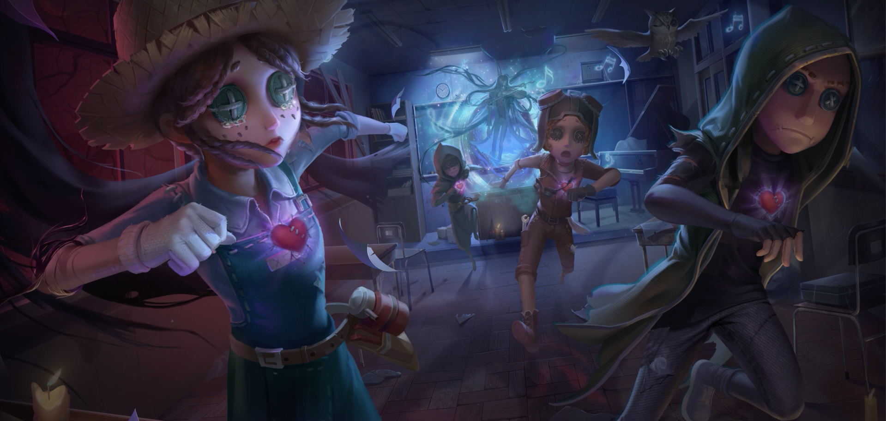
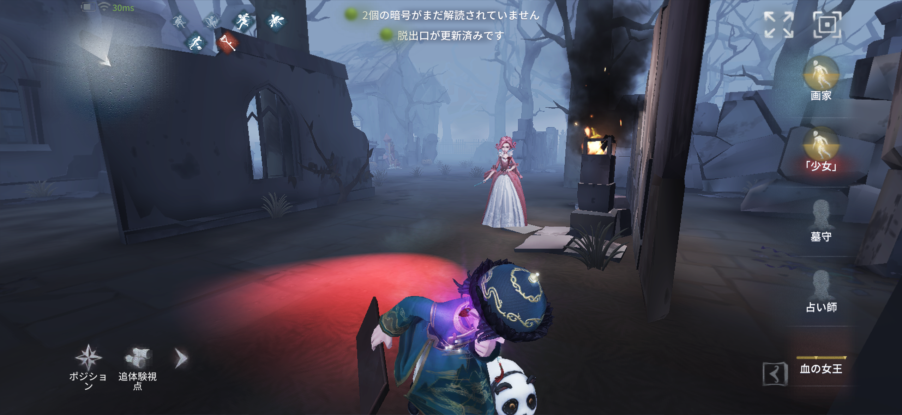
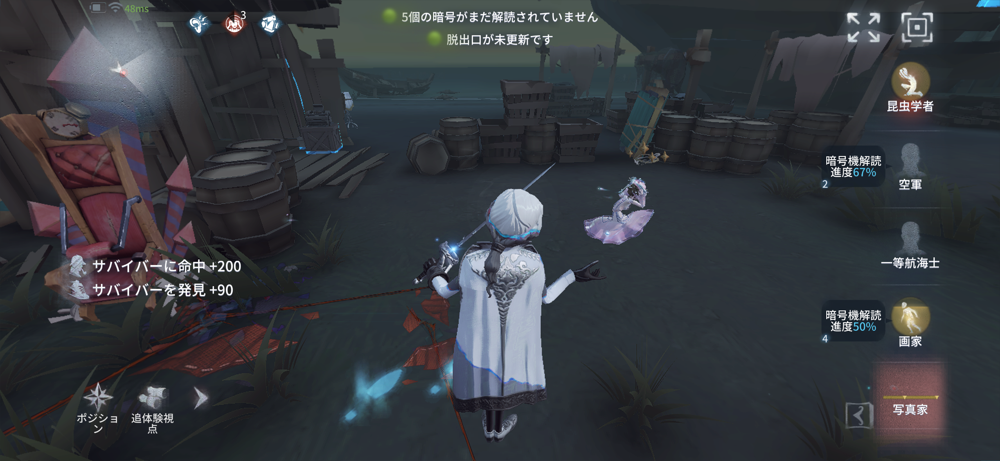
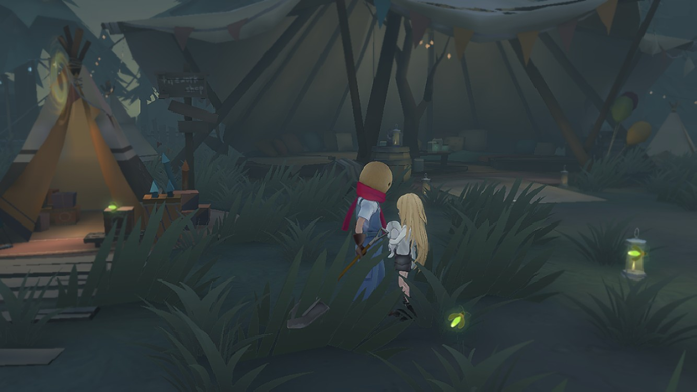
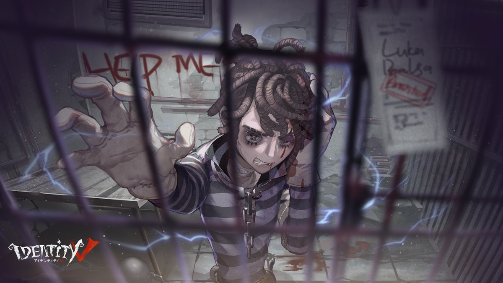
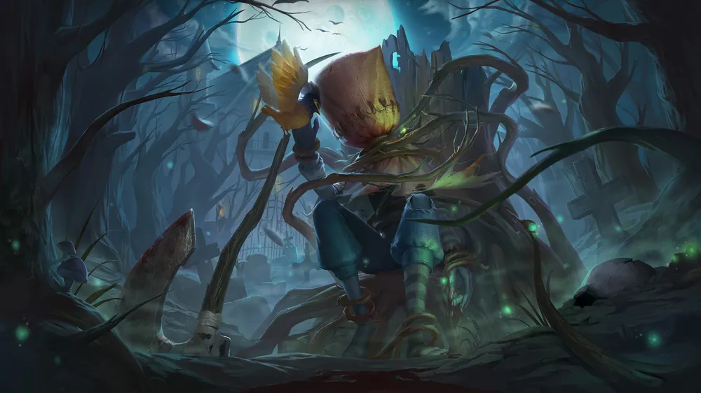

ルール解説
Identity V（第五人格）は、非対称対戦型のマルチプレイゲームです。
プレイヤーは、サバイバー（逃げる側 4人）とハンター（追う側 1人）に分かれて、それぞれの勝利条件の達成を目指します。
1. サバイバーの役割と勝利条件
サバイバー（4人）の主な目的は、ハンターから逃げながらマップ内に設置された暗号機を修理することです。
- 暗号機： 5台の暗号機を修理し、マップに現れる脱出ゲートの電源を開放します。
- 脱出： 2つの脱出ゲートのうち、いずれかを開放し、3人以上がゲートから脱出すると勝利です。
- 救助： 仲間がハンターに捕まってしまった場合、協力して救助することも重要な役割となります。

2. ハンターの役割と勝利条件
ハンター（1人）の主な目的は、サバイバーが脱出するのを阻止することです。
- 阻止： 暗号機の修理を阻止し、サバイバーをロケットチェアで4人全員を排除するか、2人以下しか脱出できなければ勝利となります。
- 能力： ハンターはそれぞれ固有の強力なスキルを持ち、マップを巡回してサバイバーを追い詰めると勝利です。

3. ゲームの基本的な流れ
サバイバーとハンターがマップに配置された状態からスタートします。
- 暗号機が5台修理されると、脱出ゲートが開放可能になります。
- サバイバーは脱出ゲートを開放し、マップから脱出を目指します。
- ハンターはサバイバーが脱出する前に全員を捕獲することを目指します。

推しキャラクター紹介
サバイバー

墓守

囚人

画家
ハンター

泣き虫

写真家
×

マップ一覧

軍需工場

赤の教会

聖心病院

湖景村

月の河公園

レオの思い出

永眠町

中華街